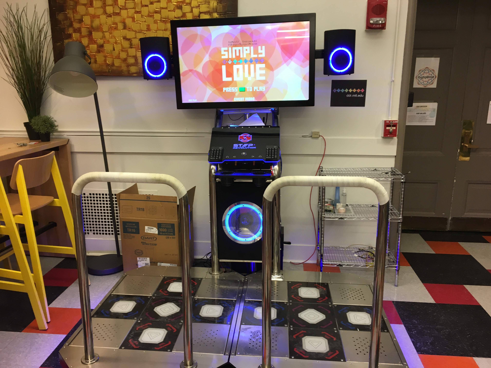

This is a webpage for the brand new StepManiaX cabinet at the Massachusetts Institute of Technology. The machine will be available for all members of the MIT community to use. There is a desktop computer running StepMania 5.1 with the Simply Love theme behind the cabinet.
Note: The PC doesn't recognize the numpads as different devices, so for the time being I have mapped 1379 to P1's controls and 2468 to P2's controls. I recommend using the numpad only for the start button. Check here for updates.
If you notice any issues with the machine (pads unresponsive, PC turned off, arrow panels cracked, unable to exit a menu, etc.), please contact me via email immediately.
Where is it located?
The cabinet is located in Pritchett Cafe next to the Rainbow Lounge on the second floor of Walker Memorial (Building 50). You can get there via the basement or from the side of the building facing East Campus. Pritchett Cafe is open from 3pm to 11pm from Monday to Friday over the regular semester. You will need an MIT student ID card to access the machine outside of cafe hours.
ITG events
I will be hosting Saturday night ITG sessions at the cabinet each week. These sessions are mainly for MIT affiliates, but anyone is free to stop by. If you would like to be reminded of when an event is happening, please subscribe to the
StepMania CSAIL mailing list.
The song packs that are currently on the machine are listed here. If you have any suggestions on what packs/songs/charts I should add, feel free to send me an email.
Special thanks
We would like to thank the De Florez Fund for Humor for funding this project with a total of $7,000 in funds – this cabinet wouldn't be here if it weren't for their generous donation.
We would also like to thank Kyle Ward, CEO of StepManiaX, for manufacturing the high-quality cabinet and pads and personally assisting us in obtaining a machine.
Finally, thanks to everyone who helped make this project happen, from helping assemble the cabinet to giving moral support.